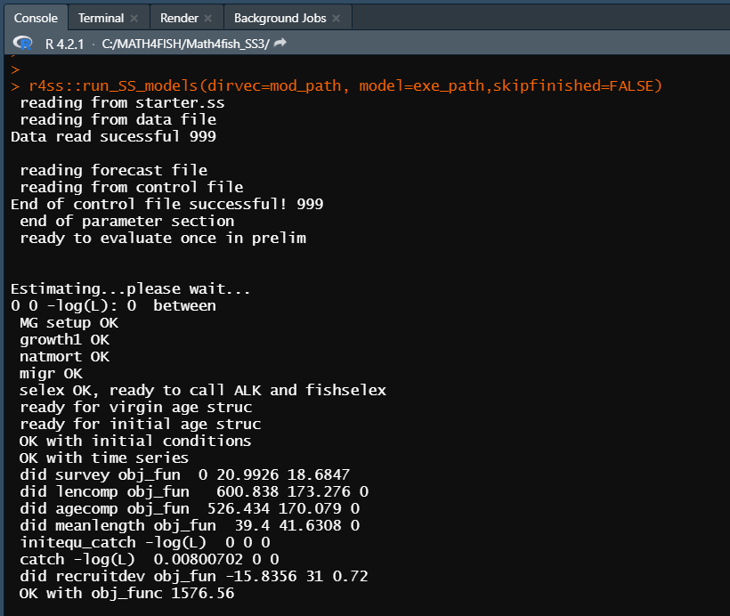

Cómo ejecutar modelos SS3
Para comenzar guarde los archivos del modelo simple (starter.ss, data.ss, forecast.ss, control.ss) y el ejecutable SS3 (ss.exe), en su directorio de trabajo, como se muestra a continuación.

Para ejecutar el modelo simple utilizaremos la función
run_SS_models de la libreria r4ss . Debemos especificar el
directorio de trabajo que contiene los archivos del modelo (dirvec =
mod_path) y el nombre del ejecutable (model=exe_path) como se muestra a
continuación.
library(r4ss)
mod_path <- paste(getwd(),'/model_files/simple',sep="")
exe_path <- paste(mod_path,"ss_win.exe",sep= "/")
r4ss::run_SS_models(dirvec=mod_path, model=exe_path,skipfinished=FALSE)Al iniciar la ejecución, SS3 siempre lee los archivos starter.ss, data.ss y forecast.ss, control.ss en el mismo orden, escribiendo las salidas de debugging en echoinput.sso y advertencias en warnings.sso a medida que se lee.
Si la salida no se ejecuta o NO SUPERA el mensaje Estimating…please wait…, entonces siga los siguientes pasos:
- Asegurese de que todos los archivos y directorios tengan el nombre correcto.
- Verifique que el archivo starter.ss tenga los nombres correctos de los archivos de control.ss y data.ss.
- Si SS3 comienza a leer archivos y luego falla, revise los archivos warnings.sso y echoinput.sso. Mirar el último contenido escrito en echoinput.sso y compararlo con sus archivos de entrada puede proporcionar pistas sobre dónde (y posiblemente por qué) falló la ejecución.
Si la salida SI SUPERA el mensaje Estimating…please wait… entonces la estructura de los datos de entrada de SS3 es correcta y por lo tanto, debería ver un resultado en la línea de comando similar a la que se muestra a continuación.

Luego, SS3 va a la sección de procedimiento donde ADMB realiza cambios iterativos de parámetros (iteration) para minimizar la función de verosimilitud (-log(L)), como se muestra a continuación.

Cuando ADMB logra la convergencia, el control pasa a sdphase para el
cálculo de la varianza de los parámetros (a menos que se especifique la
opción -nohess). Después de sdphase, SS3 pasa a la sección
de código de benchmark y forecast y luego al reporte final. Cuando se
completa la ejecución de SS3, aparece !! Run has completed
!!.
Se recomienda revisar el archivo warnings.sso en busca de problemas y sugerencias, independientemente si la ejecución se completó correctamente o no, ya que incluye sugerencias para mejorar la especificación del modelo y advertencias sobre errores comunes de especificación del modelo.
Si SS3 no fue ejecutado correctamente, no verá el mensaje !! Run has completed !!.

Los archivos de salida que contienen resultados normalmente se escriben en el directorio de trabajo donde fue ejecutado el modelo SS3, como se muestra a continuación.
mod_path <- paste(getwd(),'/model_files/simple',sep="")
dir(mod_path)## [1] "admodel.cov" "admodel.dep" "admodel.hes"
## [4] "CompReport.sso" "control.ss" "control.ss_new"
## [7] "covar.sso" "CumReport.sso" "data.ss"
## [10] "data_echo.ss_new" "derived_posteriors.sso" "echoinput.sso"
## [13] "fmin.log" "Forecast-report.sso" "forecast.ss"
## [16] "forecast.ss_new" "ParmTrace.sso" "posterior_obj_func.sso"
## [19] "posterior_vectors.sso" "posteriors.sso" "rebuild.sso"
## [22] "Reference_Run" "Report.sso" "runnumber.ss"
## [25] "SIS_table.sso" "ss.b01" "ss.b02"
## [28] "ss.b03" "ss.b04" "ss.bar"
## [31] "ss.cor" "ss.eva" "ss.p01"
## [34] "ss.p02" "ss.p03" "ss.p04"
## [37] "ss.par" "ss.r01" "ss.r02"
## [40] "ss.r03" "ss.r04" "ss.rep"
## [43] "ss.std" "ss_summary.sso" "ss_win.exe"
## [46] "ss_win.log" "starter.ss" "starter.ss_new"
## [49] "warning.sso" "wtatage.ss_new"
Muchos archivos de texto de salida se crean durante la ejecución del modelo. Los archivos de salida más útiles se pueden dividir en :
- Archivos que contienen resultados. Estos archivos incluyen ss_summary.sso y Report.sso que contienen los resultados del modelo resumidos de diferentes maneras.
- .ss_new files. Estos archivos repiten los archivos de entrada SS3, pero incluyen comentarios estandarizados. Los valores deben ser los mismos que los archivos de entrada, excepto control.ss_new, que actualiza los valores iniciales a los valores estimados finales. Los archivos .ss_new pueden ser útiles para estandarizar los comentarios en los archivos de entrada y se pueden verificar para asegurarse de que SS3 interpretó las entradas como pretendía el usuario.
- Archivos utilizados para debugging. Estos archivos incluyen warnings.sso y echoinput.sso.
Cómo modificar modelos SS3
Flujo de trabajo para modificar archivos de entrada y ejecutar modelos
Demostraremos esto creando un nuevo modelo desde un modelo inicial utilizando la librería r4ss.
# initial model to modify
mod_path <-paste(getwd(),'/model_files/simple',sep="")
# create a new directory to put a new, modified version of the model
new_mod_path <- paste(getwd(),'/model_files/simple_new',sep="")Se utiliza la funcion copy_SS_inputs de la librería r4ss
para copiar los archivos del directorio de trabajo del modelo inicial
(dir.old=mod_path) al directorio de trabajo del nuevo modelo
(dir.new=new_mod_path).
library(r4ss)
copy_SS_inputs(dir.old = mod_path, dir.new = new_mod_path)## [1] FALSERead in Stock Synthesis files
Stock Synthesis files can be read in as list objects in R using the
SS_read*() functions.
start <- r4ss::SS_readstarter(file = file.path(new_mod_path, "starter.ss"),
verbose = FALSE)
# note the data and control file names can vary, so are determined from the
# starter file.
dat <- r4ss::SS_readdat(file = file.path(new_mod_path, start$datfile),
verbose = FALSE)
# Read in ctl file. Note that the data fileR object is needed so that SS_readctl
# assumes the correct data structure
ctl <- r4ss::SS_readctl(file = file.path(new_mod_path, start$ctlfil),
verbose = FALSE,
use_datlist = TRUE, datlist = dat)
fore <- r4ss::SS_readforecast(file = file.path(new_mod_path, "forecast.ss"),
verbose = FALSE)
# can also read in wtatage.ss for an empirical wt at age model using
# r4ss::SS_readwtatage()Cómo crear nuevos modelos SS3
Hay muchos flujos de trabajo potenciales para desarrollar un nuevo modelo SS3, pero una técnica común es comenzar con un modelo existente y cambiarlo por partes. La técnica básica es:
Encuentre un modelo de trabajo existente (quizás uno de los modelos de ejemplo SS3 disponibles en el repositorio de ejemplos de usuario o quizás un modelo más similar en forma al modelo que planea crear).
Edite partes del modelo e intente ejecutar a medida que avanza para verificar que SS3 pueda leer correctamente sus entradas y que tengan sentido lógico (consejo: use options
-stopph 0 -nohesspara reducir el tiempo de ejecución con cada iteración de verificación de entradas al no estimar nada y no invertir la hessiana).
Sobre la especificación del modelo
SS3 tiene un rico conjunto de características. Algunas entradas requeridas están condicionadas a otras entradas, por lo que es importante tener en cuenta que cambiar una opción puede hacer que SS3 espere una cantidad diferente de valores en los archivos de entrada que antes. La mayoría de las veces, estas entradas condicionales se leen justo después de la opción.
El manual de usuario de SS3 se puede utilizar como guía para ayudarlo a editar su modelo. Las entradas condicionales se indican en el manual.
Si no está seguro de haber realizado la configuración correcta
(p. ej., agregando el número correcto de líneas de parámetros para una
configuración de capturabilidad elegida), intente ejecutar el modelo con
maxphase = 0 en el archivo de inicio y la opción ADMB
-nohess (o para SS3 3.30. 16 y posteriores, ejecute el
modelo con opciones de línea de comando -stopph 0 -nohess,
no es necesario cambiar el archivo de inicio). Si se completa la
ejecución del modelo, puede comparar el archivo
control.ss_new y el primer conjunto de datos en
data.ss_new con sus archivos de entrada de SS3 para
asegurarse de que SS3 interpretó los valores según lo previsto. Si la
ejecución finaliza antes de completarse, puede buscar en
warning.sso y echoinput.sso para
obtener pistas sobre el problema de su configuración.
Fases de estimación de parámetros
Las fases se utilizan dentro de ADMB para decirle al programa en qué orden se deben estimar los parámetros. Para obtener más detalles sobre las fases en ADMB, consulte el manual de usuario de ADMB.
Una fase negativa indica que el parámetro no se estima, sino que se especifica.
Una fase positiva indica que el parámetro será estimado. Los parámetros con una fase positiva más baja se estimarán antes que aquellos con una fase positiva más alta.
¿En qué fase debería poner un parámetro estimado?
Si bien existe variabilidad entre los analistas y los modelos en la forma en que se utiliza la fase, en general, los parámetros con fases positivas bajas deben ser para valores que definen la escala de la población (es decir, R0, mortalidad natural, steepness, selectividad).
Los parámetros para afinar los ajustes a los datos a menudo se estiman en fases posteriores (es decir, parámetros de capturabilidad, crecimiento y desviación del reclutamiento). Muchos modelos usan fases positivas de aproximadamente 1 a 5, aunque es posible usar valores de fase más altos.
Cuando se ejecuta un modelo sin estimar nada, las fases se ignoran; debido a que no hay estimación, ejecutar sin estimación es como incluir una fase negativa para todos los parámetros.
Flujo de trabajo propuesto para llegar a un modelo FINAL
¡Es importante recordar que llegar a un modelo lleva tiempo y muchas iteraciones! Debe planear hacer pequeñas revisiones, volver a ejecutar el modelo y ver cómo ha cambiado el modelo con cada pequeña revisión. Por lo general, se requieren muchas ejecuciones intermedias del modelo antes de llegar a un modelo final. Como mínimo, mantenga notas dentro de la carpeta de la ejecución o en otro lugar con respecto a los cambios específicos de la ejecución. El uso del control de versiones también podría ser útil para realizar un seguimiento de los cambios en el modelo. A continuación, proporcionamos algunas sugerencias sobre los pasos a seguir a medida que itera hacia su modelo “final”.
Primer paso: ejecutar el modelo sin estimación
Primero, verifique que SS3 lea los archivos de entrada según lo previsto. Utilice las opciones de línea de comando -stopph 0 -nohess para ejecutar el modelo sin estimación. Luego, examine los archivos de warning.sso, echoinput.sso y .ss_new files producidos para ver cómo SS3 interpretó sus archivos de entrada y si fue como pretendía.
Una vez que haya verificado que SS3 está leyendo su entrada correctamente, también puede considerar ajustar los parámetros de selectividad, crecimiento y reclutamiento.
Segundo paso: ejecutar estimando algunos parámetros
Intente cambiar la fase máxima para que sea mayor que 0 (quizás 2 o
3) para estimar algunos pero no todos los parámetros. Haga esto usando
-stopph x -nohess, donde x debe ser la fase máxima deseada
(por ejemplo, 2 o 3). -nohess todavía se usa para reducir
el tiempo de ejecución. Durante esta etapa de las ejecuciones del
modelo, debe intentar ajustar el modelo para resolver todos los patrones
principales en los residuales. Esto puede incluir considerar y realizar
cambios en la estructura del modelo.
Tercer paso: ejecutar estimando todos los parámetros
Una vez que se hayan resuelto todos los patrones principales en los residuos, intente estimar todos los parámetros en el modelo. Cambie la fase máxima para incluir todas las fases de su modelo (es decir, igual o superior a la fase más alta especificada en su modelo). Querrá hacer varias ejecuciones para diferentes propósitos de refinamiento del modelo en este momento:
- Realice una o más corridas con la hessiana estimada para obtener la varianza de las desviaciones de reclutamiento y luego use este vector de varianzas para ajustar la rampa de ajuste del sesgo (consulte el Manual del usuario de SS3 para obtener detalles adicionales).
- Realice ejecuciones con o sin estimar la hessiana para ajustar las ponderaciones de datos.
- Ejecute el modelo varias veces y altere los valores iniciales (la opción de fluctuación se selecciona en starter.ss). Esto ejecuta el modelo con nuevos valores de parámetros iniciales para determinar si es posible un mejor ajuste del modelo utilizando diferentes valores iniciales.
Después de estas ejecuciones, su modelo debería estar ajustado y listo para las ejecuciones finales.